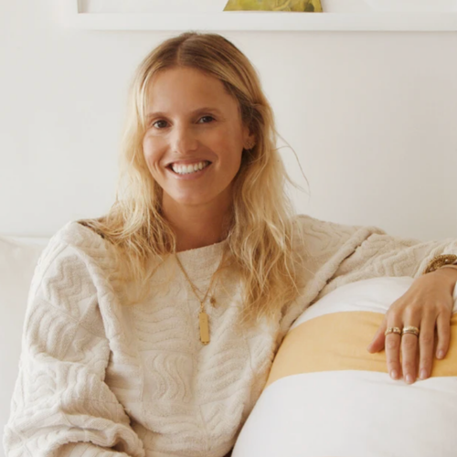
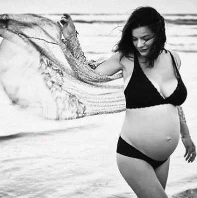
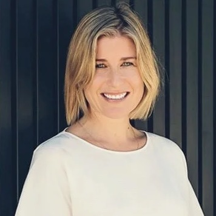
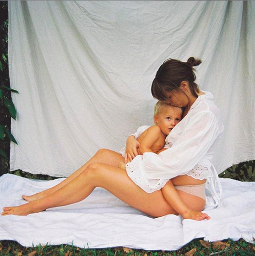
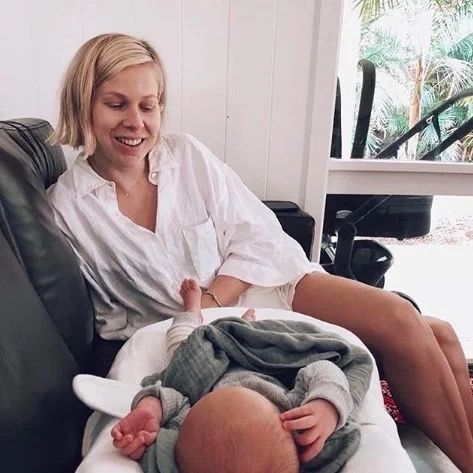
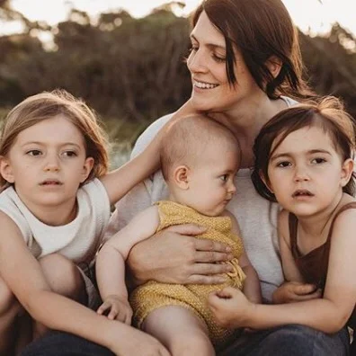
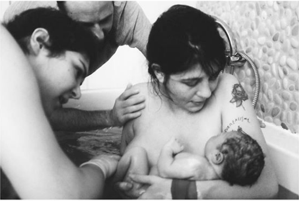

Reviews
"If you want the best for your birth, choose the wonderful Nathalie. She has the ability to create the most respectful, beautiful, gentle and sacred space. At my most vulnerable I felt safe and connected."
— Emma Bellamy, mother of three
★ 5.0
Average rating
13+
Years supporting families
100%
Would recommend
From the Families
★★★★★
"Nathalie was a constant support with the most beautiful nature. We adored her manner, communication and we found all of her teachings highly informative and clear. We felt supported all the way."

Lucy FolkMother of two
★★★★★
"Having her by my side during my pregnancy and postpartum period was so comforting. She helped me to understand that there really is no need for fear around birthing, to trust my intuition."

Sophie WillingMother of two
★★★★★
"She was calm and professional yet kind and warm and really helped support my partner so he could support me. I felt truly cared for in a very special way. As a GP I will be highly recommending Nathalie."

Dr Camilla WhiteMother of three
★★★★★
"I felt supported in every essence of pregnancy and mothering. You just completely 'got' everything I needed and made me feel calm and confident whenever I started to doubt myself."

Renée D'ArcyMother of three
★★★★★
"I was visualising an intimate, drug-free water birth and my wish became a reality with the help of Nathalie. This was the best investment and I can highly recommend having this beautiful woman by your side."

Cisco TschurtschenthalerMother of two
★★★★★
"Nathalie has supported me for the births of two of my children. Her calm and grounded energy coupled with her extensive knowledge gave me such comfort. A supported mother is the best kind of mother."
Priscylla ElliottMother of four
★★★★★
"Nathalie provided wonderful support throughout my pregnancy and birth. Her unwavering calmness was so beneficial in such a pivotal event in life."

Bethany CecinsMother of one
★★★★★
"You made us feel so nurtured — gorgeous smile, calm presence, yummy food, amazing pictures, and you transformed the house into a beautiful sanctuary. Your support was invaluable."

Karla HammerMother of three
★★★★★
"Knowing that you were going to be by our side during the birth was extremely reassuring. You encouraged me in every moment I was beginning to feel like I couldn't do it anymore."

Kaity FoxMother of two
Ready to write your own story?
Get in touch for a free discovery call — no pressure, just a conversation.
Book a Free Call